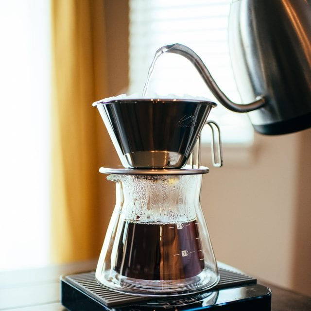

Brewed coffee is made by pouring hot water onto ground coffee beans, then allowing to brew. There are several methods for doing this, including using a filter, a percolator, and a French press. Terms used for the resulting coffee often reflect the method used, such as drip brewed coffee, filtered coffee, pour-over coffee, immersion brewed coffee, or simply coffee. Water seeps through the ground coffee, absorbing its constituent chemical compounds, and then passes through a filter. The used coffee grounds are retained in the filter, while the brewed coffee is collected in a vessel such as a carafe or pot.
